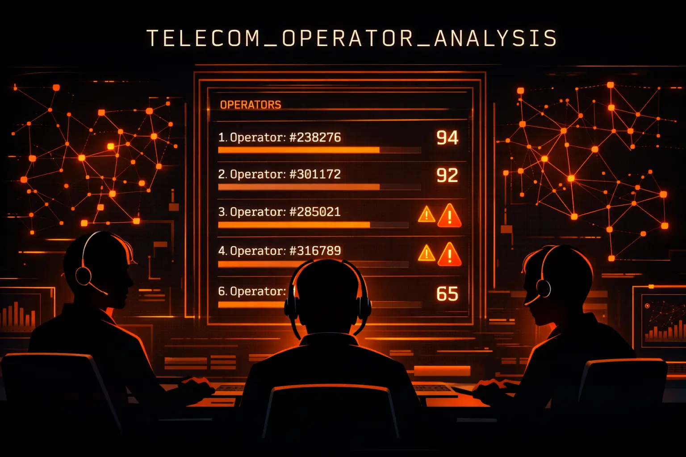
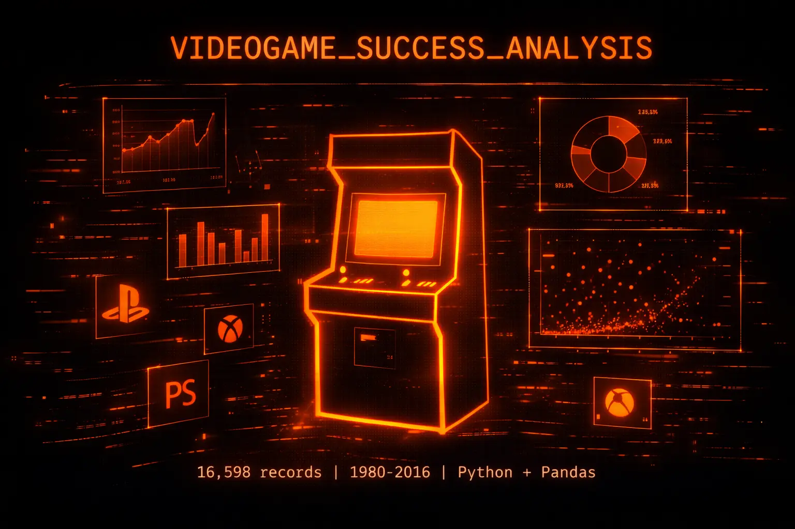
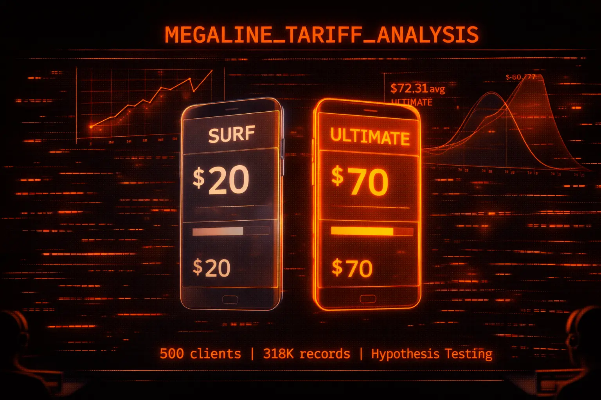
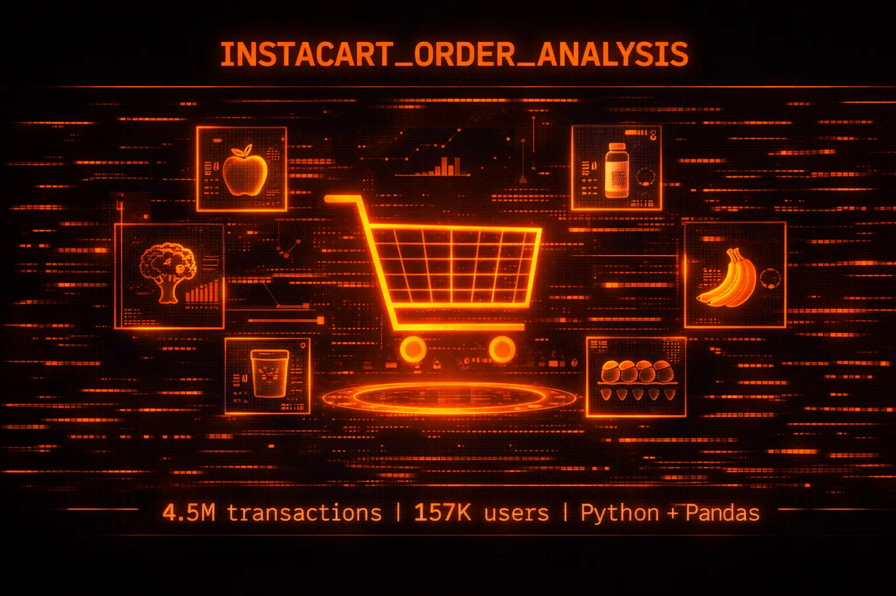

ARCHIVES_DATA.ANALYTICS
// Data models and insights

Identificación de Operadores Ineficaces — Telecom
🔍 El reto: Una empresa de telecomunicaciones necesitaba identificar qué operadores de su call center tenían bajo rendimiento para priorizar capacitación.
✅ Resultado: 202 operadores ineficaces identificados (18.5% del total) con diferencias estadísticamente significativas validadas — p < 0.05.

🎮 ANÁLISIS DE VIDEOJUEGOSAnálisis de Factores de Éxito en Videojuegos
🔍 El reto: Ice Online Store necesitaba saber qué géneros y plataformas de videojuegos tenían más probabilidad de éxito para optimizar su inventario y campañas de 2017.
✅ Resultado: Identifiqué géneros con 15% mayor probabilidad de éxito analizando +16,000 registros (1980-2016) con pruebas estadísticas de hipótesis.

Análisis Estadístico de Tarifas — Megaline
🔍 El reto: Megaline necesitaba determinar cuál tarifa (Surf vs Ultimate) genera más ingresos para optimizar su presupuesto publicitario de 2019.
✅ Resultado: Ultimate genera 19.1% más ingresos ($72.31 vs $60.71) con p < 0.0001. 72% de usuarios Surf exceden límite de datos generando $40.55 extra promedio.

Análisis de Patrones de Compra — Instacart
🔍 El reto: Instacart necesitaba identificar patrones de compra en 4.5M+ transacciones para optimizar inventario, logística y recomendaciones personalizadas.
✅ Resultado: 59% tasa de reorden global, domingo día pico (+40%), 29% ventas en Produce. Top 20 productos concentran demanda crítica.